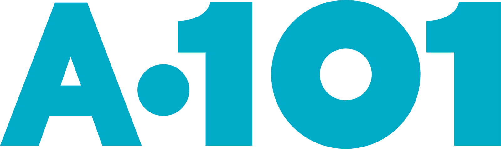
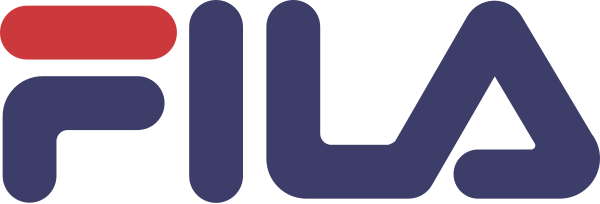

ERP'nin önünde konumlanan merkezi PIM katmanı: ürün verisini toplar, doğrular, zenginleştirir ve tüm satış kanallarına dağıtır.
Civil'in PIM ile ulaşmak istediği sekiz sonuç — çözümün her parçası bunlardan birine hizmet eder.
Tüm ürün verisi tek noktada yönetilir; kopya ve çelişkili kayıt kalmaz.
Ürün ve katalog verisi doğrulanır, eksikleri ölçülerek tamamlanır.
Tedarikçi ve Civil aynı platformda buluşur; veri kaynağında girilir.
Tedarikçi, tedarikçi grubu, ürün ve ürün grubu seviyesinde iş kuralı ve kontrol.
ERP yalnızca transactional master olarak kalır; içerik yükü PIM'e taşınır.
E-ticaret, pazaryerleri, POS ve pazarlama kanalları tek kaynaktan beslenir.
İş kuralları, iş akışları ve AI fonksiyonları uygun her noktada devrede.
PIM ile başlayıp B2B süreçlerin fazlar halinde taşınabileceği bir zemin.


Perakende, moda, spor ve hızlı servis markaları ticaret operasyonlarını CommerceLab üzerinde yürütüyor.
Bileşenler, kapsam sınırı ve bugünkü katalogdan çıkan ilk bulgular.
Her veri tek bir sistemde yaşar: PIM ürünün ne olduğunu, Civil'in mevcut sistemleri nasıl satıldığını yönetir.
Kategoriye özel alanlar: beslenmede son kullanma tarihi; beslenme, banyo & sağlık ve bebek bezinde abonelik; çocuk giyimde 0–16 yaş aralığı.
İlk tanımlamadan güncellemeye, kural katmanından KPI'lara — ürün verisinin yaşam döngüsü.
Ürün tedarikçide doğar, kurallardan ve onaylardan geçerek ERP'ye ve kanallara ulaşır.
| Alan | Mevcut | Yeni |
|---|---|---|
| MenşeiKritik | Türkiye | Bangladeş |
| Elyaf içeriğiKritik | %100 pamuk | %95 pamuk, %5 elastan |
| Görsel | 4 görsel | 6 görsel |
| Açıklama | v3 | v4 |
| Kapsam | Kural | Sonuç |
|---|---|---|
| Beslenme | Son kullanma tarihi ve içerik bilgisi girilmeden ürün kaydedilemez. | Zorunlu alan |
| Tekstil ürünleri | Elyaf içeriği ve menşei eksik ya da değişmişse kategori onayı istenir. | Onaya düşer |
| Çocuk giyim | Yaş aralığı 0–16 ile sınırlı; beden, yaş grubuyla tutarlı olmalı. | Uyarı |
| Yeni tedarikçi | İlk ürünlerde numune ve kalite kontrol adımı akışa eklenir. | Ek adım |
| Bebek bezi · banyo | Abonelik uygunluğu işaretlenen ürün abonelik kanalına açılır. | Kanal kuralı |
Örnekler Civil kataloğundan türetildi; kural kataloğu kickoff çalıştaylarında birlikte tamamlanır. Kurallar arayüzden yönetilir, geliştirme gerektirmez.
Beş gösterge, PIM panosunda kategori, tedarikçi ve ekip kırılımında izlenir.
Ürün başına doldurulmuş nitelik, görsel ve içerik oranı; kategori hedefiyle karşılaştırılır.
Kategorinin zorunlu alan doluluğu ve kural ihlali sayısı; en zayıf kategori görünür olur.
Belirlenen süre içinde gözden geçirilmemiş veya tedarikçi teyidi yenilenmemiş ürünler.
Eksik, standart dışı ölçüde ya da ürün verisiyle çelişen görseller.
Ortalama onay süresi ve SLA içinde tamamlanan onayların oranı; ekip ve adım bazında.
Eşiğin altına düşen ürünler için ilgili tedarikçiye veya ekibe otomatik görev açılır.
Veri modelinden kanal yayınına, otomasyondan AI'a — platformun sunduğu yetenekler.
İş akışları ve kurallar arayüzden tanımlanır; yeni bir onay adımı eklemek bir yazılım projesi değildir.
AI içeriği hazırlar, hatayı yakalar, düzeltmeyi önerir; son söz her zaman onay akışındadır.
Görselden ürün içeriği; marka tonunda, SEO ve GEO uyumlu açıklama.
Sınıflandırma, kategori bazlı nitelik ve değer önerisi; pazaryeri eşlemeleri.
Eksik alan tespiti, kategori uyumsuzluk alarmı; mavi ürünün pembe girilmesi gibi çelişkilerde düzeltme önerisi.
| Gereksinim | Yaklaşım | Durum |
|---|---|---|
| Görev yönetimi | Draft ve düzenleme modları için görevler; IAYS ile entegre özel süreç | Uyarlama |
| Ürün ve medya arama | SKU, etiket, anahtar kelime ve dosya adı araması; ihtiyaca göre ek geliştirme | Uyarlama |
| AI içerik · hata tespiti · düzeltme | Marka tonunda açıklama, çelişki uyarısı ve düzeltme önerisi | Geliştirmede |
| Barkod havuzu (EAN13) | Satın alınan barkodların havuzdan otomatik atanması | Netleşecek |
| Performans & davranış analizi | Kanal performansı ve kullanıcı davranışının PIM'e yansıtılması | Netleşecek |
Tedarikçilerin kendi ürünlerini yönetmesi CL Tedarikçi Platformu ile standart karşılanır. Kalem kalem eşleşme: ek doküman (docs.html).
Fazlar, başlangıçta netleşecek kararlar, ekip ve yönetişim.
Kategori bazlı nitelik setleri, zorunlu ve yasal alanlar, merchandising kategorileri.
ERP'ye hangi alanların gideceği, ürün kodunun nerede üretileceği, geri besleme.
Satın alma, kategori ve e-ticaret rolleri; adım bazında onay süreleri.
Pilot grup, panel ya da API tercihi; numune ve kalite kontrol süreçleri.
E-ticaret, pazaryerleri, POS ve pazarlama feed'leri; kanal bazlı içerik ihtiyacı.
EAN13 barkod havuzu, IAYS görev entegrasyonu, performans raporlama kapsamı.
Genel koordinasyon, çözüm mimarisi ve kapsam kararları.
Proje planı, paydaş iletişimi, risk ve ilerleme takibi.
Veri modeli, kurallar, iş akışları, tedarikçi platformu ve entegrasyon.
Her iş paketi tek bir sahibe raporlar; haftalık durum toplantısı ve ortak proje planı üzerinden takip edilir.
İş takibinden canlı sonrası desteğe kadar tüm süreç ölçülebilir ve izlenebilir araçlarla yürür.
Civil'in tedarikçiden kanala tüm ürün verisini tek kaynaktan yöneteceği PIM için hazırız.